Descending Through A Crowded Valley(ICML 2021)
Descending through a Crowded Valley — Benchmarking Deep Learning Optimizers(ICML 2021)
一、问题背景——深度学习优化器的研究现状
1.种类繁多
·现存的深度学习优化方法有数百种。
2.根据传闻进行选择(based on anecdotes)
·现有深度学习优化器的选择，缺乏清晰的理论指导和总结性的经验证据，因此常常只能基于传闻进行选择。
二、论文贡献
1.优化器选择——提供基于事实的启发(evidence-based heuristics)
·本文研究结果对于优化器的选择问题，可以提供基于事实的启发。
2.评估深度学习优化领域的进展
·文章使用4种不同的schedule，针对8个深度学习问题，使用15种优化器进行评估，调整几十种超参数设置，是到文章发表为止，
对深度学习优化器最全面的事实评估。
3.超过50000次运行带来的深入理解(insight)
·使用默认超参数，评估多个优化器，工作效果近似于调整单个优化器的超参数的工作效果。
·使用额外的未经调整的学习率schedule在平均意义上有帮助，但其影响对于不同优化器和问题具有显著差异。
·没有优化器能在所有workload下占据支配地位；面对不同workload，一些优化方法的性能是高度变化的，另一些则都能展示出良好的
表现。
4.提出优化器评估baseline
·为未来的优化器benchmark和元学习方法，提供了开源、标准化、可扩展的baseline。
5.可能最重要的结论
·现有的优化器已经足够，对于深度学习随机优化的研究应关注明显的改进，进行更有意义的非增量研究。
三、章节组织
1.摘要
·文章介绍了深度学习优化器种类繁多，选择时缺乏清晰理论指导、总结性经验证据的现状，简要说明研究成果。
2.介绍
（1）主体部分
·深度学习优化方法种类繁多、缺乏明确理论支撑、依赖个人经验和舆论炒作进行方法选择的现状。
·建立客观评估基准的关键——需要在大量问题上对比大量方法，同时面临每个方法参数调优的高昂资源和时间成本，以及为保证实验准确性而重复进行随机实验带来的组合性代价。
·优化器大规模评估的目的——根据事实证据，理解优化器和参数选择如何影响模型性能；检验最新提出的优化方法是否优于更成熟的SGD/ADAM等方法；评估是否存在默认超参数设置就能带来突出表现的优化器。
（2）核心贡献
·评估深度学习优化领域的进展
·超过50000次运行带来的深入理解(insight)
·提出优化器评估baseline
（3）相关工作
①已有的深度学习优化器评估标准简介——DEEPOBS, TASKSET
②DEEPOBS相关实验结论
③可扩展的讨论——适应性方法(adaptive methods)的泛化性能是否比一阶方法更差
3.评估过程
·问题选择
·优化器选择
·超参数调优代价、调优方法
·学习率schedule
4.实验结果
·对结果图表的解释
·超参数调优、学习率schedule能带来多少帮助
·超参数调优后，哪些优化器表现更好
5.实验局限性
·实验结果的泛化问题
·本实验采用的超参数搜索策略（随机搜索）对实验结果的影响
6.结论
·对于本实验获得的优化器相关结论，以及本实验提出的优化器评估baseline进行总结。
·强调“现有优化器已经足够”的实验结论，期待关于优化器的研究能聚焦于关键挑战，如自动内循环调优以实现健壮、高效优化等问题。
四、相关工作
1.DeepOBS——深度学习优化器基准框架
[1] Frank Schneider, Lukas Balles, and Philipp Hennig. DeepOBS: A Deep Learning Optimizer Benchmark Suite. In 7th International Conference on Learning Representations, ICLR, 2019.
·包含了广泛的深度学习实际问题，以及评估优化器的标准化步骤。
·更接近真实世界的深度学习任务。
2.TASKSET
Metz, L., Maheswaranathan, N., Sun, R., Freeman, C. D.,
Poole, B., and Sohl-Dickstein, J.
Using a thousand optimization tasks to learn hyperparameter search strategies. arXiv preprint: 2002.11887, 2020.
·关注问题更小，数量更多。
·聚焦于新的优化器或超参数的元学习问题。
3.DEEPOBS相关实验结论
·优化器性能十分依赖于超参数调优的代价。
·在超参数调优足够充分的情况下，通用优化器永远不会被特殊优化器超越。
五、技术方法
1.实验研究涉及的问题空间
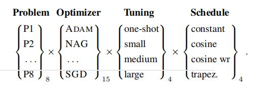
2.问题(Problem)
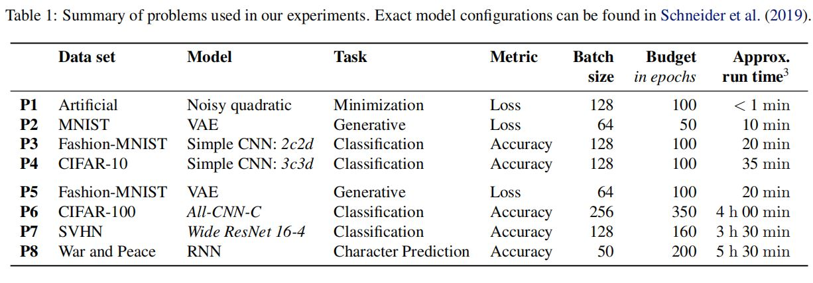
（1）问题规模
·问题P1-P4属于“小”问题，P5-P8属于“大”问题。
（2）评估标准
·若某问题定义了测试精度，则以最终测试精度作为评估标准。
·若测试精度没有定义，则使用最终测试损失作为评估标准。
（3）选取最终测试精度/最终测试损失作为评估标准的目的
·获取优化器的泛化能力
·与实际使用高度相关
3.优化器(Optimizer)
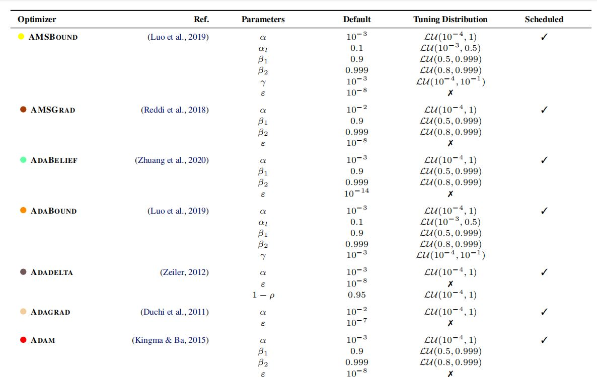
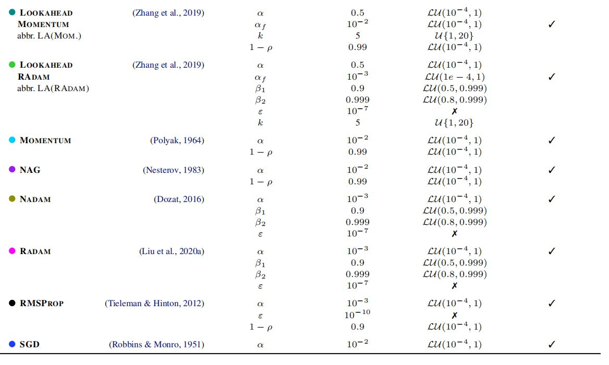
[Table 4]
（1）优化器选取
·选取社区中最为流行的\(15\)个优化器。
·聚焦于一阶优化方法，原因：一阶优化方法在深度学习非凸优化问题中普遍存在；可以简化比较。
·本文研究的一个问题：这些优化器是否存在明显区别，或者它们在本质上是否冗余。
（2）不关注平均权重、集成方法等优化技术
4.超参数调优代价(Tuning Budget)
（1）一次性调优代价(one-shot budget)
·使用优化器原作者提供的默认参数。
·若优化器在默认参数下性能较好，则具有巨大的使用价值，因为可以大幅度减少训练所需的计算资源。
（2）small/medium/large budget
·分别包含\(25/50/75\)个调优轮次，每一轮的超参数使用随机搜索进行采样。
·对于small/medium budget，直接使用表4中定义的分布进行超参数采样。
·对于large budget，在使用表4超参数分布的同时，对搜索空间的边界进行了限制，使搜索空间仅包含来自medium budget表现前\(20\)%的所有超参数配置。
（3）超参数调优种子(seed)的选取
·使用单一种子进行超参数调优。
·对于表现最好的超参数设置(configuration)，使用\(10\)个不同的种子进行重复实验，以反映平均值、标准差，并进行稳定性评估。
·调优过程可能选到“幸运”种子，即多次运行的平均性能不佳，概率小于0.5%。
·在上述评分标准下，更稳定的优化器更占优势。
5.超参数调优方法(tuning method)
（1）随机搜索
·优点：相比于网格搜索(grid search)，效率更高；相比于贝叶斯优化(Bayesian optimization)，更容易实现、并行化。
·小问题：超参数采样分布会影响优化器性能。采样分布相当于针对“好参数设置”的一种先验，坏的先验会使性能变差。
·对于任一优化器，若参考文献中没有关于超参数分布的先验知识，则都采用相同的超参数分布。
[注]
·若无超参数分布先验知识，作者采用的默认分布是\(LU(10^{-4}, 1)\)，即对数均值、标准差分别为\(10^{-4}, 1\)的对数均值分布。
·Table 4详见上方表格。
（2）超参数的定义
·可调超参数与固定参数之间的界限较为模糊。例如适应性方法中的\(\epsilon\)，一开始引入是为了防止除以0的问题，但近期
被重新理解为一个与问题相关的超参数。由此，产生了两种不同的超参数更新规则。
·本文对两种更新规则都进行考虑，并将两种更新规则下的优化器视为不同的优化器。
·对于每一个更新规则，分别选择一种流行的可调超参数。
6.学习率调度(schedule)
（1）常数学习率
（2）余弦衰减(cosine decay)——作为平滑衰减的一个例子
（3）带有热重启的余弦调度(cosine with warm restarts schedule)——作为一种周期性调度
（4）梯形调度(trapezoidal schedule)
六、实验结果
1.单个图表的含义
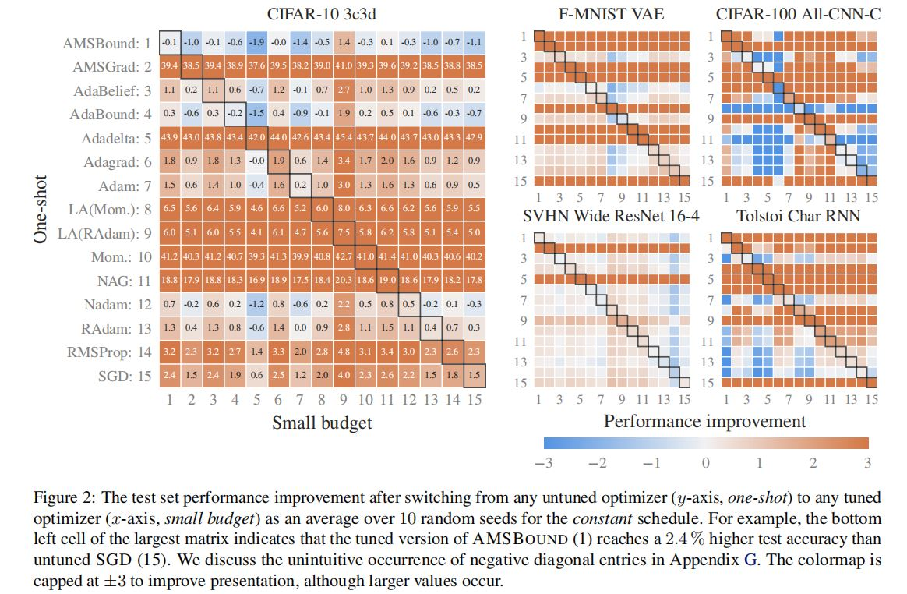
（1）行、列
·每行对应于一个优化器，每列表示small budget下，随机搜索获得超参数的轮次。
（2）数值及其含义
·数值：表格中的数值，表明与本优化器在默认参数下的性能相比，使用当前轮次获得的随机超参数时，优化器性能提升的百分点。
·一行越趋向橙色、数值越大，表明该优化器的默认超参数设置的工作效果越差，调参能带来的性能提升越大；而蓝色、白色则表明
默认超参数设置的工作效果已经较好。
（3）结论——对经验法则的验证
·表格中的实验结果对“自适应方法在默认参数下工作效果较好”的经验法则进行了验证和支持。
·对于AMSBound/Nadam等自适应方法，随机采样获得的超参数带来的性能提升很小；而对于Mom./LA(Mom.)等非自适应方法，随机采样获得的超参数可能带来巨大的性能提升。
2.一种新的调参方法
·与选取单一优化器，进行大量的超参数调试相比，尝试多个默认参数设置的优化器并选出表现最佳者，可以在更少的计算开销、调优选择
尝试下产生具有竞争力的结果。
·可能的原因：优化器具有隐式的学习率调度(implicit learning schedules)，尝试不同优化器的效果类似于尝试
不同的well-tested learning rate schedules。
·限制：可能不适用于更复杂任务，如GAN和transformer模型。
·下列图表验证了这一调参方法的有效性。
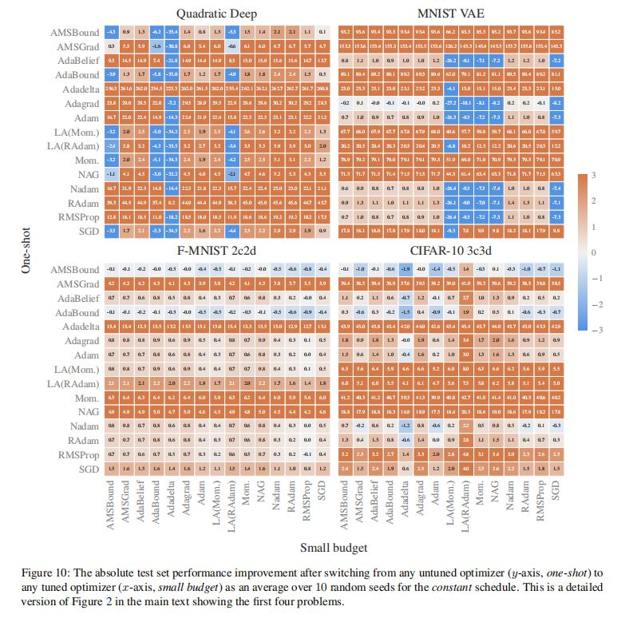
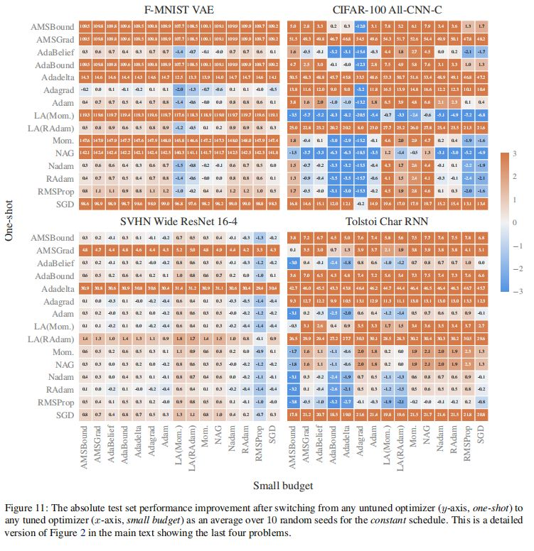
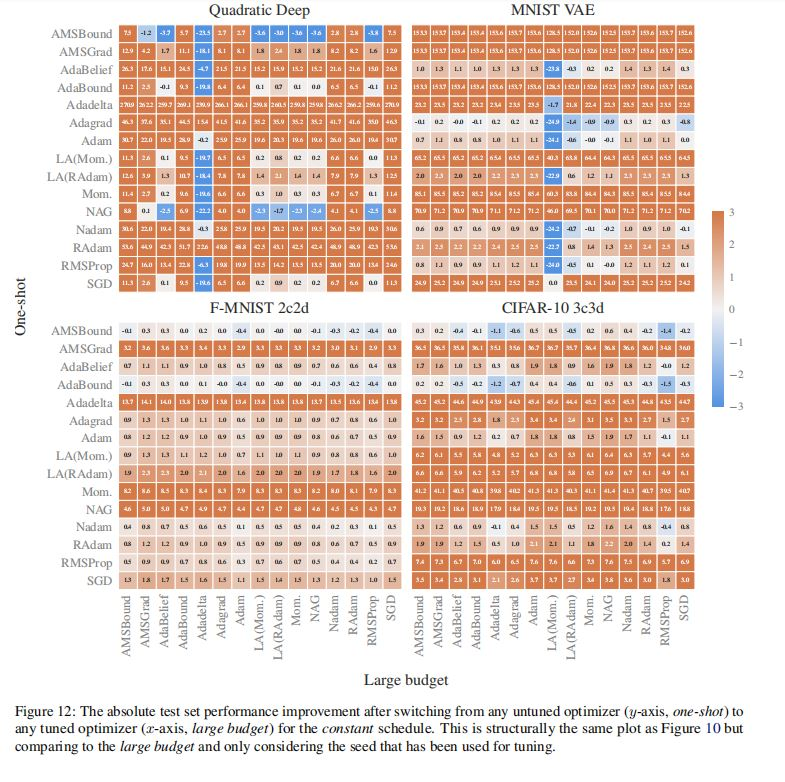
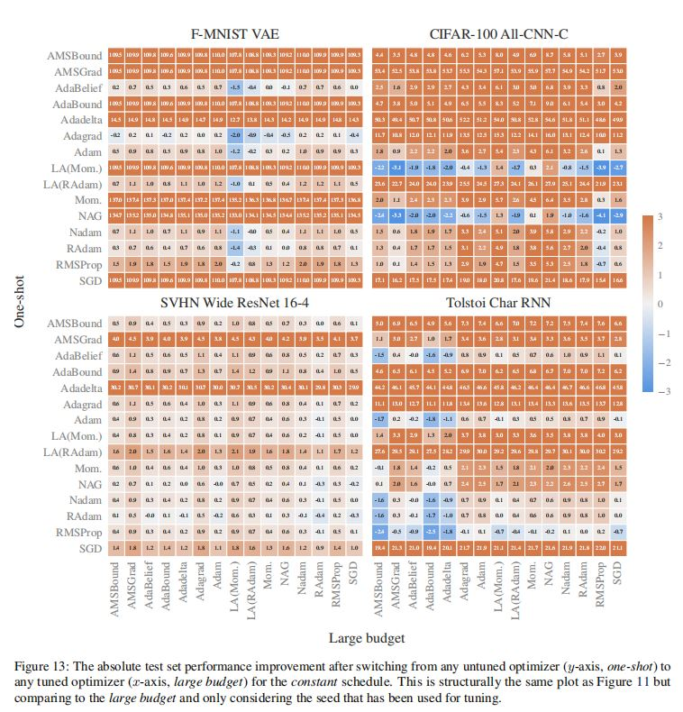
3.超参数调优(tuning)和学习率调度(schedule)带来的改进程度
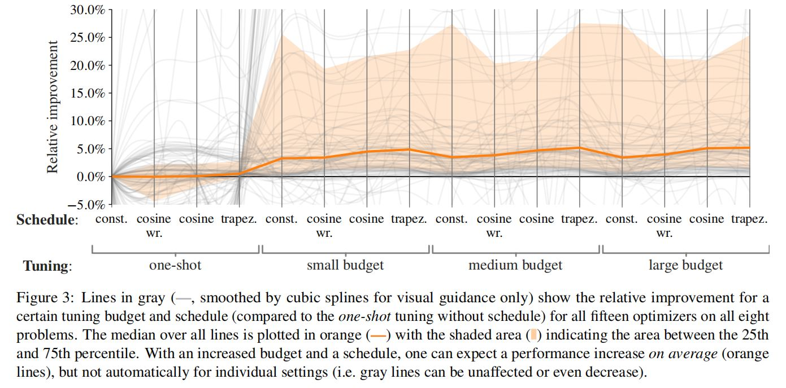
（1）调优代价
·从中位数意义上看(In the median)，提高调优代价可以提高性能，但收益会下降。
·例如，没有任何学习率调度的median budget相比于默认参数设置，可以带来3.4%的中位数相对性能提升。
（2）学习率调度
·使用未经超参数调优的学习率调度可以提升性能。
（3）上述趋势在不同的任务、不同的优化器上有显著差异。
4.超参数调优后表现好的优化器
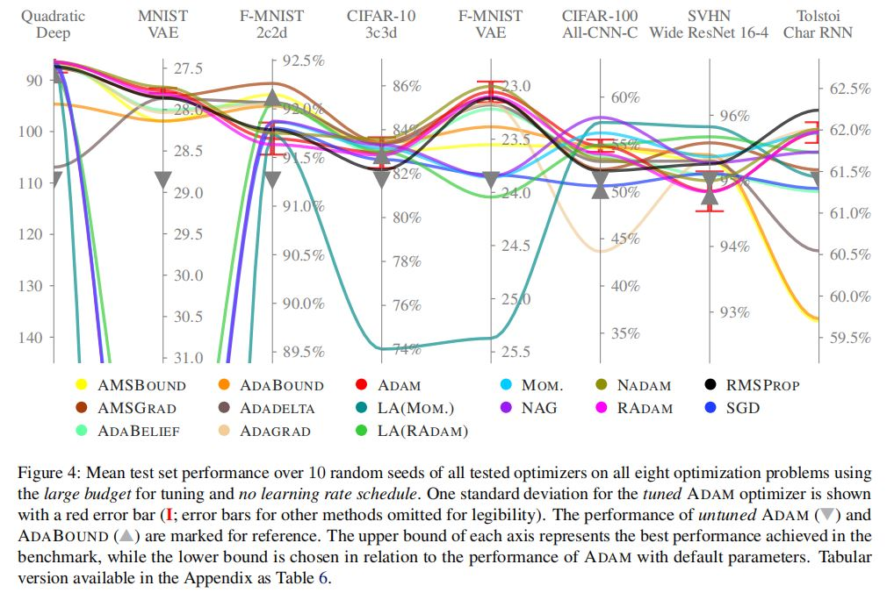
（1）稳定性
·一部分优化器总体表现好，另一部分优化器在不同任务上表现差异显著。
（2）ADAM/ADABOUND的优越性
·选取一小批未调参的优化器（如：ADAM, ADABOUND）中表现最佳的一个，通常可以产生具有竞争力的表现。
·将上述runs和ADAM经过调参的版本结合在一起，对于论文涉及的许多问题，均可以产生稳定、稍有改进的结果。
·为了进一步提升性能，作者建议采取一个不同的优化器，例如RMSPROP/NAG。
（3）最优性能的获取
·获取最优性能仍然需要尝试多种优化器。
·哪个优化器表现最好，与具体问题有关。某个优化器在一个问题上表现最佳，但可能在另一问题上表现很差。
（4）特定任务/特定模型架构上某些优化器总是表现更好的观点
·实验结果支持了特定任务/特定模型架构上，某些优化器总是表现更好的观点。
·本实验的结果：在图像分类任务上，NAG往往优于ADAM优化器；在自然语言建模任务上，RMSPROP总是表现最好。
·下列图表说明了上述实验结果。
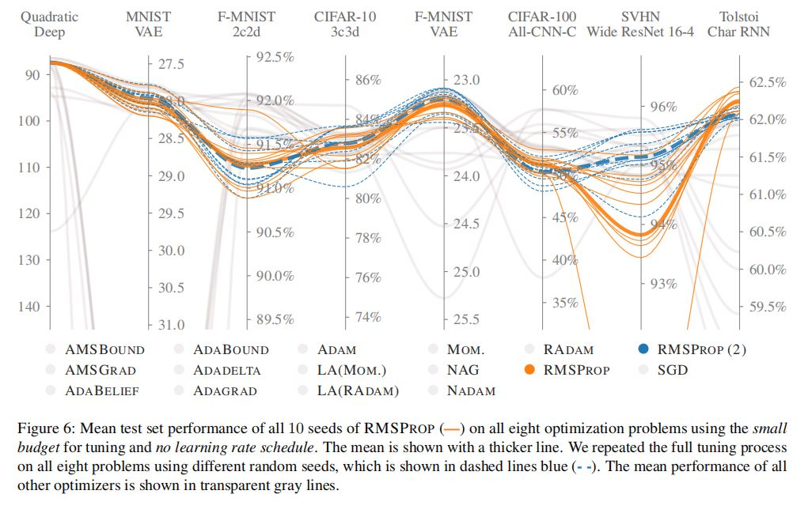
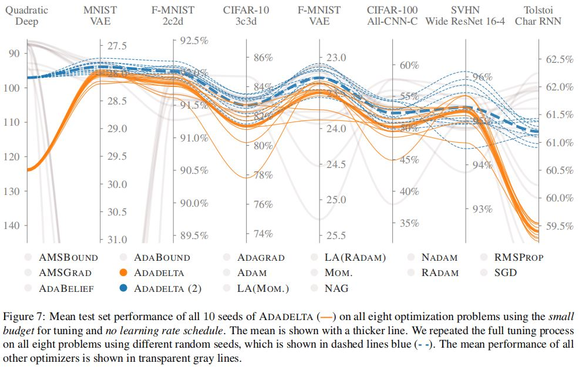
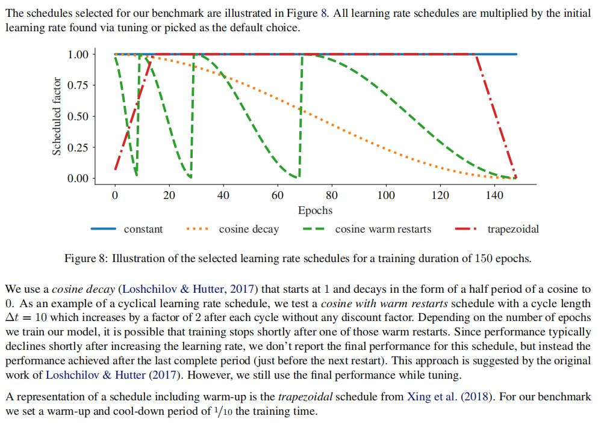
七、结论
1.优化器实验结论——概括
（1）在不同的任务上，优化器性能有显著差异。
（2）使用默认超参数，评估多个优化器，工作效果近似于调整单个优化器的超参数的工作效果。
（3）尽管不能识别出某一个优化方法在所有任务上占据支配地位，文章找到了一个大幅缩小的特定优化器子集以及相应的参数选择，这些优化器和相应参数设置在文章涉及的实验中，通常可以产生具有竞争力的结果。
2.优化器实验结论——Adam优化器
·Adam优化器仍然是一个强有力的竞争者，更新的优化方法不能显著、一致地超越它。
八、论文提及的研究局限性
1.实验结果的泛化问题
·结论受到训练参数、软件架构或其他不可避免因素的影响，并且可能不适用于其余工作，如GAN、强化学习，或者内存使用十分关键的应用。
·没有覆盖大规模问题，如ImageNet或transformer模型等。
·研究不是深度学习优化器评估基准的确定性工作，并且没有包括深度学习的许多“维度”。
·没有使用权重平均、集成方法等优化技术，因为这些方法会增加计算开销。
2.本实验采用的超参数搜索策略（随机搜索）对实验结果的影响
·超参数调优方法、代价及搜索范围，对于模型性能会产生显著影响。
·文章使用随机策略进行超参数搜索，可能过于简单；但是更复杂的搜索方法（如：贝叶斯优化）可能使研究变得极其复杂。
·实验使用了相对宽广的初始搜索空间，并针对大的搜索代价进行了搜索空间的限制。文章认为，如果优化方法没有对于超参数调优进行
良定义的搜索空间限制，这将是该优化方法的一个隐形缺点，并且应该被benchmark反映出来。
[个人观点与思考]
九、论文存在的问题
1.数据集种类、数目极其有限
·由上表可知，论文涉及的常用数据集仅MNIST手写数字图像、CIFAR图像分类、SVHN门牌号码数据集，及“战争与和平”字符预测数据集，共4个。其中，前三者为CV图像分类数据集，后者为NLP字符预测数据集。
·实验涉及的数据集数量较少，且偏重于计算机视觉方向，实验结论的普适性是有限的。文章对于“不同的数据集是否会影响优化器性能”
这一问题，似乎少有提及。
2.任务类型受限
·八组问题分为字符预测、图像分类、图像生成、损失最小化四类，其中图像分类独占4组。
·任务类型有限，涉及问题除图像生成外，都是CV和NLP领域较为简单、基础的问题。实验并未涉及当时仍有较大研究空间的图像分割、
目标检测等重要问题，并且对于图像生成问题仅采用MNIST数据集，研究手写数字生成。
手写数字生成只是广大生成问题的一个较小子类，实验结论可能无法很好地泛化到一般的图像生成问题。
3.网络架构较为陈旧
·除生成模型VAE外，实验涉及的神经网络仅有CNN, VAE, RNN, ResNet等流行数年的经典网络。
·面对2020-2021年已经流行的diffusion, transformer, GAN模型，以及后续将要流行的score model等最新架构，各类优化器的性能会
如何变化，实验分析较少。
4.网络架构与优化器性能关系分析不足
·实验针对同一个问题，仅采用单一网络架构，使用不同优化器进行性能对比。
·同样的网络架构，有没有可能在不同任务上，最适合的优化器也是不一样的？这个问题有待解答。
十、可行研究
1.数据集扩展研究
·针对更多数据集进行对比实验，提高实验结果的说服力。比如，ADAM优化器在实验涉及的数据集上是“强有力的竞争者”，但是扩展到
其他数据集上，该结论是否成立，有待探究。
2.任务类型扩展研究
3.网络架构扩展研究
4.网络架构与优化器性能关系研究
·针对同一数据集、同一网络架构，研究不同任务下各个优化器的性能对比，研究特定的网络架构应用于不同任务时，哪种优化器分别是
效果最好的。